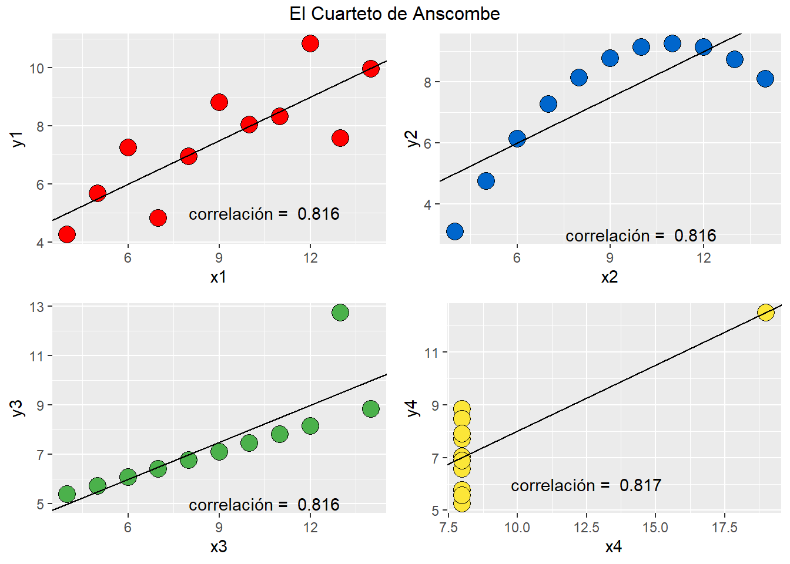
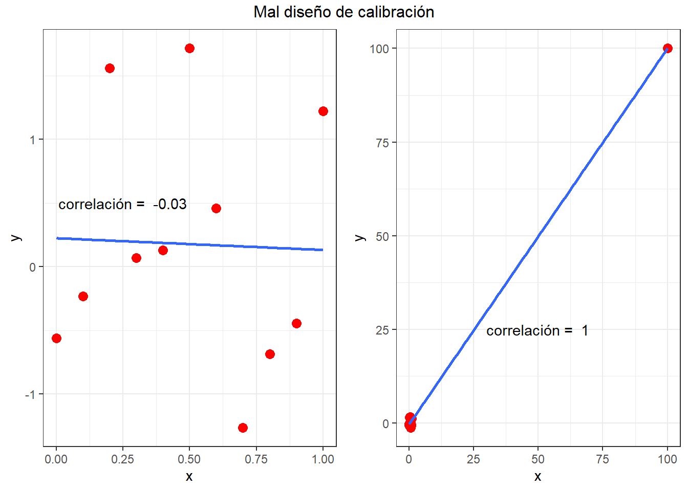
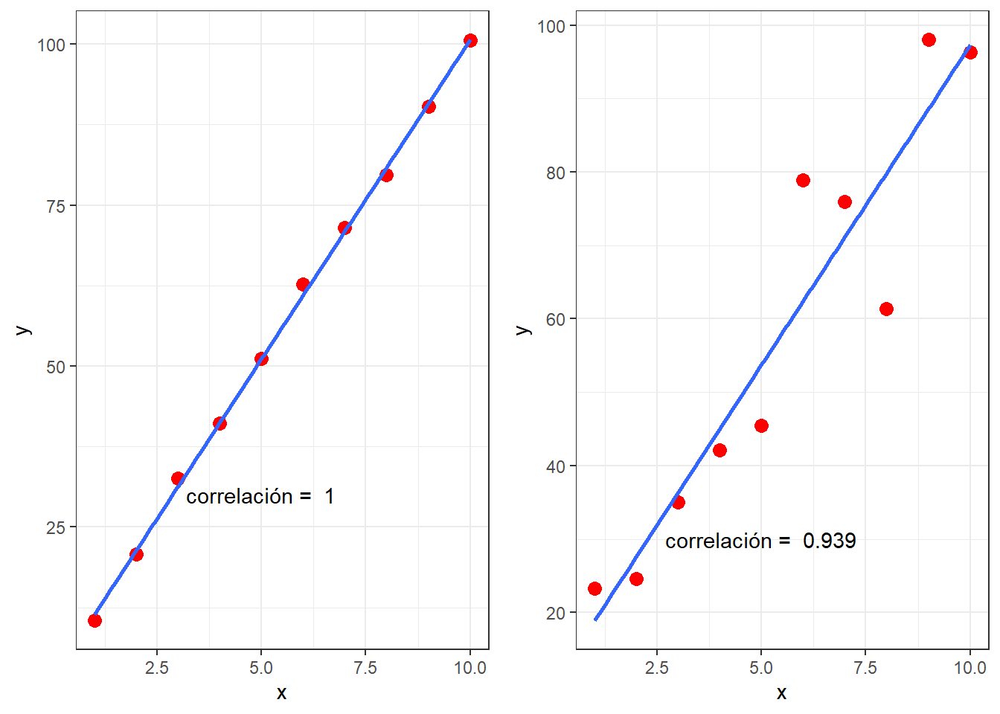
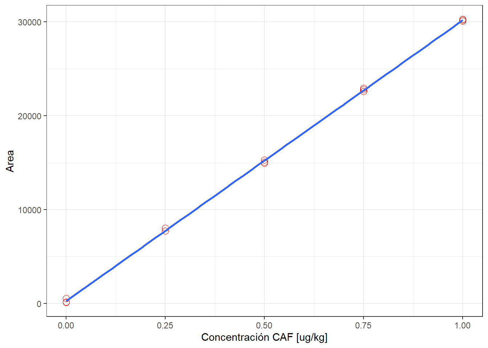
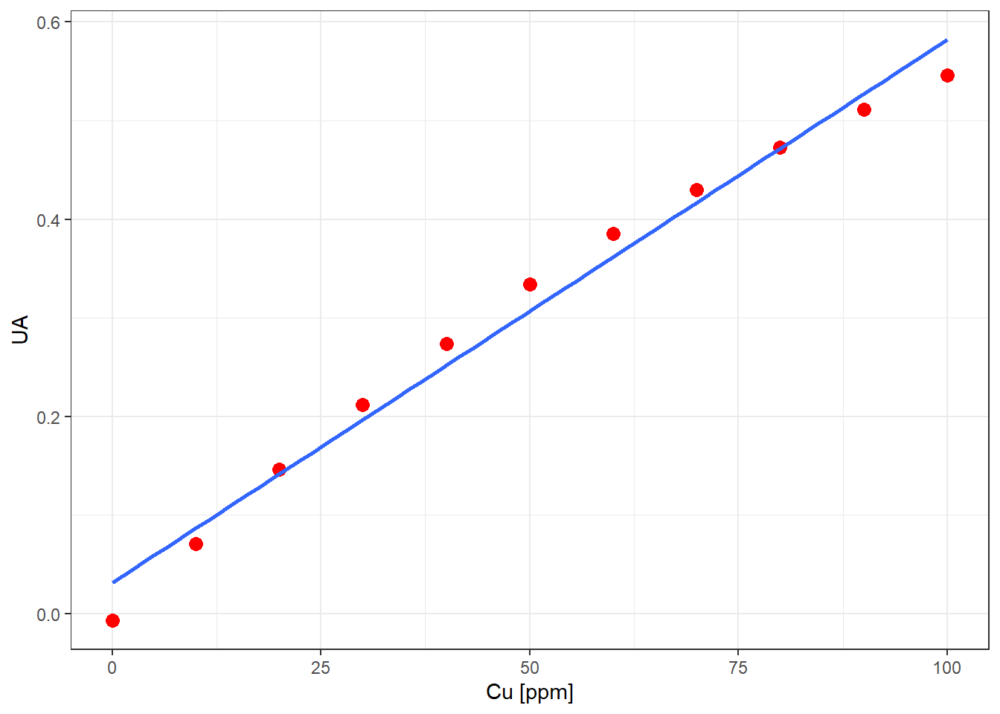

¿Cómo demuestro que mi curva de calibración es lineal?
En este post intentaremos derribar el mito del coeficiente de correlación con “muchos” 9’s como prueba de linealidad. Además, presentaremos dos test formales para evaluar el modelo de calibración lineal en química analítica.
Coeficiente de correlación
Este parámetro estadístico indica la fuerza y dirección de la relación de dos variables cuantitativas, por ejemplo;
- Concentración (\(x\)) y Absorbancia (\(y\))
- \(log \text{ Concentración}\) y \(E\) Potencial (Ecuación de Nernst)
- La edad de las ganadoras de Miss América con los asesinatos utilizando objetos calientes y vapor. ¡Cuidado con las correlaciones espurias!
Todos los químicos estamos familiarizados con la ecuación de Lambert-Beer, la cual establece la archiconocida relación entre absorbancia y concentración en métodos espectrofotométricos:
\[\begin{equation} \underbrace{A}_\text{y} = \underbrace{\epsilon \cdot b}_\text{$\beta_{1}$} \cdot \underbrace{C}_\text{x} (\#eq:lambert) \end{equation}\]
De la ecuación @ref(eq:lambert) se observa claramente la relación con el modelo estándar de calibración lineal \(y = \beta_{0} + \beta_{1}x\) asumiendo un intercepto \(\beta_{0} = 0\). Por lo tanto ¿por qué nos sorprende tanto encontrar un coeficiente de correlación alto en curvas de calibración espectrofotométricas? Era totalmente esperable, pues hay un modelo físico-químico que sustenta el modelo lineal.
OK, de acuerdo. Este modelo físico-químico sólo es válido bajo ciertas condiciones (como todos los modelos), de hecho son conocidas las desviaciones de la ley de Lambert-Beer a altas concentraciones.
Derribando el mito del r = 0,999…
Para comenzar, por favor, ponga atención a la figura @ref(fig:anscombe) denominada “El Cuarteto de Anscombe”. La “gracia” de estos datos de calibración es que todos tienen la misma pendiente, intercepto, error de calibración y… ¡coeficiente de correlación!
¿No me cree? Le dejo este link para que descargue los datos en archivo Excel y se convenza con sus propios ojos.
El punto que revela la figura @ref(fig:anscombe) es que es posible obtener coeficientes de correlación “altos” inclusive con datos que, a simpe vista, no revelan una relación lineal entre \(X\) e \(Y\). Es más, es posible obtener un alto coeficiente de correlación donde no existe absolutamente ninguna correlación entre \(X\) e \(Y\) mediante un mal de diseño de la curva de calibración. Por ejemplo, en la figura @ref(fig:influyente) se muestra a la izquierda que la correlación entre \(x\) e \(y\) es prácticamente 0. Sin embargo, cuando incluimos un punto influyente, muy alejado de la nube de puntos a baja concentración, mágicamente el r = 1 (derecha).
Moraleja: Trate, en lo posible, de diseñar la curva con los puntos equiespaciados y evite los saltos de varios órdenes de magnitud de la concentración.

La linealidad tampoco es un parámetro cuantitativo, una curva con r = 0,999 no es más lineal que otra con r = 0,99. Observe la figura @ref(fig:simplot), ambas curvas fueron simuladas en lenguaje R con el mismo intercepto y pendiente siguiendo estrictamente el modelo lineal \(y = \beta_{0} + \beta_{1}x\), sin embargo, tienen coeficientes de correlación distintos. La curva de la izquierda no es más lineal que la de la derecha ya que ambas fueron simuladas a partir del mismo modelo, la única diferencia es que la de la derecha tiene una mayor dispersión de los puntos, pero no por ello es “menos lineal”, de hecho ambas lo son, pues fueron simuladas.
set.seed(123) # Es para que Ud. obtenga los mismos
# resultados en su simulación en R
b0 <- 1 # Intercepto = 1
b1 <- 10 # Pendiente = 10
s <- 1 # Desviación estándar de calibración
# Simulamos el mismo modelo lineal
x <- 1:10 # Calibrantes
y1 <- b0 + b1*x + rnorm(10, 0, s) # Absorbancias con
# error = s = 1
y2 <- b0 + b1*x + rnorm(10, 0, 10*s) # Absorbancias con
# error = 10*s = 10
Test formales de linealidad
Existen varios tests estadísticos formales para evaluar el supuesto de linealidad de la curva de calibración. Sin embargo, en este post veremos dos que son los más utilizados en Química Analítica y son sugeridos por normativas internacionales (para presentárselos a los amables auditores).
Si bien no es estrictamente riguroso, para simplificar el concepto, diremos que ambos tests estadísticos intentan dirimir entre dos hipótesis:
- \(H_{0}\) (a.k.a Hipótesis Nula) : El modelo lineal es adecuado para describir los datos de calibración
- \(H_{1}\) (a.k.a Hipótesis alternativa): El modelo lineal NO es adecuado para describir los datos de calibración
También debemos hacer la siguiente acotación: En estadística un modelo lineal es aquel en que sus parámetros son lineales. Por ejemplo, la curva de calibración lineal clásica \(y = \beta_{0} + \beta_{1}x\) tanto \(\beta_{0}\) y \(\beta_{1}\) son lineales. Sin embargo, en un modelo exponencial \(y = \gamma_{0} e^{\gamma_{1}x}\) el coeficiente \(\gamma_{1}\) no lo es.
Dicho esto, el modelo cuadrático de calibración \(y = \beta_{0} + \beta_{1}x + \beta_{2}x^2\) es lineal desde el punto de vista estrictamente estadístico. Sin embargo, debido al arraigo del concepto de linealidad en química analítica no modificaremos su interpretación.
Test de carencia de ajuste (Lack of fit) ISO 11095
Este test está basado en comparar dos estimadores del error aleatorio:
- Error puro o experimental
- Error de carencia de ajuste o lack of fit
Es decir, necesitamos un estimador del error aleatorio totalmente independiente del error del modelo de calibración que queremos ajustar. Para estimar este error, la prueba de carencia de ajuste exige que hagamos replicados de cada uno de los calibrantes.
Pero tienen que ser replicados verdaderos. No es válido inyectar varias veces el mismo estándar en el equipo. Prepárelos independientemente.
Si los dos estimadores del error aleatorio son similares, entonces el modelo de calibración que acabamos de ajustar es adecuado para modelar los datos experimentales. ¿Cuán similares tienen que ser? Lo probaremos con un test F. Los detalles algebraicos son latosos-engorrosos y pueden ser consultados en la bibliografía. Sólo indicaremos cómo hacer este test de linealidad en lenguaje R, como no. (¿Y en Excel cuándo?)
La tabla @ref(tab:lof) muestra los datos de calibración de cloranfenicol en matriz leche obtenida por GC/MS-NCI (Gas Chromatography/Mass Spectrometry - Negative Chemical Ionization …¡Qué tiempos aquellos!). Note que cada nivel de calibración está preparado en triplicado totalizando n = 15 calibrantes independientes. La figura @ref(fig:lofplot) muestra la curva de calibración.
| Replicado | 0 | 0.25 | 0.5 | 0.75 | 1 |
|---|---|---|---|---|---|
| 1 | 88 | 7714 | 15292 | 22611 | 30280 |
| 2 | 154 | 7726 | 14947 | 22945 | 30222 |
| 3 | 512 | 8043 | 15063 | 22772 | 30089 |

La tabla @ref(tab:lofcal) muestra el análisis estadístico de esta calibración:
| term | estimate | std.error | statistic | p.value |
|---|---|---|---|---|
| (Intercept) | 262 | 78 | 3 | 0.005 |
| x.caf | 29936 | 127 | 236 | 0.000 |
Por ahora no nos detendremos en el análisis de la tabla (eso quedará para otro post). Haremos directamente el Test de Carencia de Ajuste (lack of fit) en R el cual se muestra en la tabla @ref(tab:loftest):
library(olsrr) # Cargamos el package 'olsrr' para aplicar el test lack-of-fit
ols_pure_error_anova(fit.cal)Lack of Fit F Test
------------------
Response : y.caf
Predictor: x.caf
Analysis of Variance Table
---------------------------------------------------------------------------------
DF Sum Sq Mean Sq F Value Pr(>F)
---------------------------------------------------------------------------------
x.caf 1 1680303154.42 1680303154.42 54131.47 6.444664e-25
Residual 13 392485.57 30191.20
Lack of fit 3 82074.03 27358.01 0.8813464 0.4832262
Pure Error 10 310411.54 31041.15
---------------------------------------------------------------------------------Ok, para interpretar el test de carencia de ajuste nos fijaremos en la fila que dice “Lack of fit” y en el p-value del test, el cual aparece bajo la columna Pr(>F) = 0.483. La interpretación tradicional de una prueba estadística diría algo más o menos así:
Dado que el p-value \(> 0.05\), entonces, no hay evidencias en contra de la hipótesis nula. El modelo lineal es adecuado para modelar los datos de calibración.
Algunas consideraciones:
- ¿Dice en alguna parte que el modelo de calibración es lineal? Póngalo de wallpaper en su pantalla: NO.
- Lo único que se puede extraer como conclusión es que el modelo lineal es adecuado, es razonable para modelar los datos de calibración. Nada más.
- Existen infinitos modelos de calibración que podrían ser idóneos, este test nos dice si el que hemos elegido para modelar los datos es razonable/adecuado, sin embargo, no nos dice que sea “EL” modelo perfecto.
- ¿Qué tiene de especial el famoso 0,05? Absolutamente NADA. ¿Qué concluiría Ud. si el p-value fuese 0,04999 ó 0,05001? Sería un test totalmente inconcluyente.
- Lamentablemente, esto es una dicotomía perversa que desde hace mucho tiempo ha sido objeto de varias críticas. Le invito a leer las siguientes referencias sobre la interpretación y controversia de los p-values en ciencia:
Ronald L. Wasserstein & Nicole A. Lazar (2016) The ASA’s Statement on p-Values: Context, Process, and Purpose The American Statistician Volume 70, 2016 - Issue 2 link
M.Baker Statisticians issue warning over misuse of P values Nature 531, 151 (10 March 2016) link
Singh Chawla D. Big names in statistics want to shake up much-maligned P value. Nature. 2017 Jul 26;548(7665):16-17 link
“The p-value was never intended to be a substitute for scientific reasoning” Ron Wasserstein, Director Ejecutivo de la Asociación Americana de Estadística ASA.
Test de Mandel ISO 8466-1
Esta prueba estadística es bastante sencilla y está basada en la comparación entre el modelo de calibración lineal y un modelo alternativo. Por lo tanto, no es una prueba absoluta, sino relativa a la elección del modelo alternativo. Require al menos n = 6 calibrantes (sin replicado).
En general, el test de Mandel utiliza el modelo de calibración cuadrático para compararlo con el modelo lineal:
\[ y = \beta_{0} + \beta_{1}x + \beta_{2}x^2\]
Los detalles estadísticos pueden consultarse en la bibliografía.
- Primero calcule la suma de cuadrados de los residuos \(SS_{r}\) para cada uno de los modelos de acuerdo a la siguiente expresión:
\[\begin{equation} SS_{r} = \sum_{i = 1}^{n} e_{i}^2 (\#eq:res) \end{equation}\]
Donde el residuo \(e = y - \hat{y}\). \(y\) es la respuesta instrumental observada o experimental (áreas, absorbancias, etc.); \(\hat{y}\), es la respuesta instrumental que predice el modelo (lineal o o cuadrático) en cada una de las concentraciones de los calibrantes. Si observa la ecuación @ref(eq:res) el concepto de residuo es el mismo para cualquier modelo de calibración, es decir, ¿cuánto difiere lo que se observa experimentalmente con lo que predice el modelo?
Un buen modelo tiene residuos pequeños. Un residuo grande para cierto de nivel de concentración implica que existe una gran diferencia entre lo observado y lo que predice el modelo, por lo tanto, nos guiará (en otro post) a detectar posibles valores anómalos o outliers.
- Calcule la diferencia entre ambas sumas de cuadrado de los residuos, la del modelo no lineal \(SS_{r}^{no-lin}\) y la correspondiente al modelo lineal \(SS_{r}^{lin}\):
\[\begin{equation} D = SS_{r}^{no-lin} - SS_{r}^{lin} (\#eq:D) \end{equation}\]
- Estime el estadístico F calculado:
\[\begin{equation} F = \frac{D}{SS_{r}^{no-lin}/(n - 3)} (\#eq:D) \end{equation}\]
Obtenga el F de tabla para 1 grado de libertad en el numerador y \(n - 3\) para el denominador
Compare el \(F_{calculado}\) con el \(F_{tabla}\) y decida en base a la siguiente regla:
Si \(F_{calculado} < F_{tabla}\) se concluye que no hay evidencias en contra de la hipótesis nula de linealidad del modelo. ¿Quiere decir que el modelo de calibración es exactamente lineal? Ya sabemos que NO. Rigen las mismas consideraciones que que notamos en el test de carencia de ajuste.
Si \(F_{calculado} > F_{tabla}\) se rechaza la hipótesis nula de linealidad del modelo. Los datos no son consistentes con la hipótesis. Y aquí se abre una caja de Pandora, pues esta conclusión también tiene muchas consideraciones estadísticas que se deben tener en cuenta para interpretarla apropiadamente las cuales, por ahora, no profundizaremos.
Los pasos recién descritos son para llevar a cabo el Test de Mandel “a mano”, afortunadamente los softwares estadísticos como R y Excel (sí ¡Excel!) tienen incorporada esta prueba estadística de linealidad. Veamos un ejemplo.
La tabla @ref(tab:datamandel) muestra los datos de calibración de Cu por AAS; la figura @ref(fig:plotmandel), la curva de calibración:
| 0 | 10 | 20 | 30 | 40 | 50 | 60 | 70 | 80 | 90 | 100 |
|---|---|---|---|---|---|---|---|---|---|---|
| -0.007 | 0.071 | 0.146 | 0.212 | 0.274 | 0.334 | 0.385 | 0.43 | 0.473 | 0.511 | 0.546 |

A simple vista se observa la no linealidad de la curva de calibración. Veamos que nos dice el Test de Mandel en la siguiente tabla ANOVA:
# d: corresponde al data frame de los datos de calibración
fit.lin <- lm(y ~ x, data = d) # Ajuste lineal.
fit.nolin <- lm(y ~ x + I(x^2), data = d) # Ajuste no lineal cuadrático
anova(fit.lin, fit.nolin)Analysis of Variance Table
Model 1: y ~ x
Model 2: y ~ x + I(x^2)
Res.Df RSS Df Sum of Sq F Pr(>F)
1 9 0.0054816
2 8 0.0000186 1 0.005463 2351.1 3.621e-11 ***
---
Signif. codes: 0 '***' 0.001 '**' 0.01 '*' 0.05 '.' 0.1 ' ' 1En la tabla el valor \(F = 2351\) corresponde al \(F_{calculado}\) el cual es comparado internamente con el \(F_{tabla}\) entregando, finalmente, el p-value \(Pr(>F) = 3.62e-11\). La evidencia en contra de la hipótesis nula de linealidad es abrumadora.
Entonces, resumiendo ¿Por qué no puedo probar linealidad de la curva de calibración?
Porque la decisión está basada en pruebas estadísticas, las cuáles tienen algunas consideraciones para su correcta interpretación:
Con estas pruebas estadísticas no se puede probar linealidad, lo que podemos concluir es que el modelo lineal es adecuado o razonable para modelar nuestros datos de calibración ¡nada más!.
Es imposible que en un sistema físico-químico complejo como una llama o plasma/detector (ICP-MS) exista una relación “perfectamente” lineal entre absorbancia (cuentas) y concentración. Lo que hicieron Lambert & Beer (o cualquier científico que proponga un modelo de la naturaleza) fue proponer una simplificación del sistema y representarlo mediante un modelo cuantitativo.
Existen muchos modelos que se podrían ajustar muy bien a nuestros datos de calibración, pero en estadística existe el principio de parsimonia:
En igualdad de condiciones, la explicación más sencilla suele ser la más probable
¿Por qué complicarnos la existencia con un modelo hiper-super-parabólico- tangencial si el modelo lineal es razonable y adecuado para nuestros propósitos de cuantificación? Pero ojo:
“Everything should be made as simple as possible, but no simpler” – Albert Einstein
Es aquí donde las pruebas estadísticas nos ayudan a decidir entre varios modelos plausibles.
En defensa del coeficiente de correlación
Es cierto, el \(r\) con “muchos” 9’s no es una prueba formal de linealidad… ¿quiere decir que el \(r\) no es importante en Química Analítica? Por supuesto que sí lo es. Anote:
El coeficiente de correlación está íntimamente ligado con la incertidumbre de calibración. A mayor \(r\) menor es la incertidumbre de calibración.
Puede profundizar en este aspecto consultando en:
Ellison, S.L.R. In defense of the correlation coefficient. Accred Qual Assur (2006) 11: 146. https://doi.org/10.1007/s00769-006-0087-y
Por último… ¿y el \(r^2\)?
Ahhh, pero eso es otra cosa… hasta la próxima.
Bibliografía
Lutz Brüggemann, Wolfgang Quapp, Rainer Wennrich Test for non-linearity concerning linear calibrated chemical measurements (2006) Accreditation and Quality Assurance Volume 11, Issue 12, pp 625–631
J. M. Andrade and M. P. Gómez-Carracedo Notes on the use of Mandel’s test to check for nonlinearity in laboratory calibrations Anal. Methods, 2013,5, 1145-1149